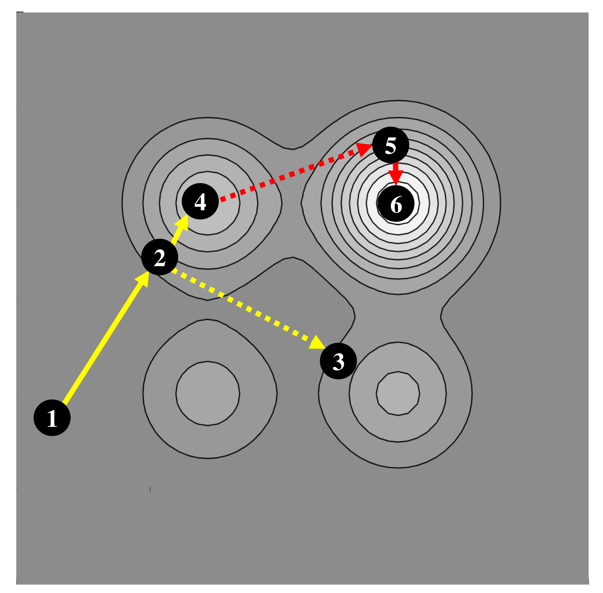
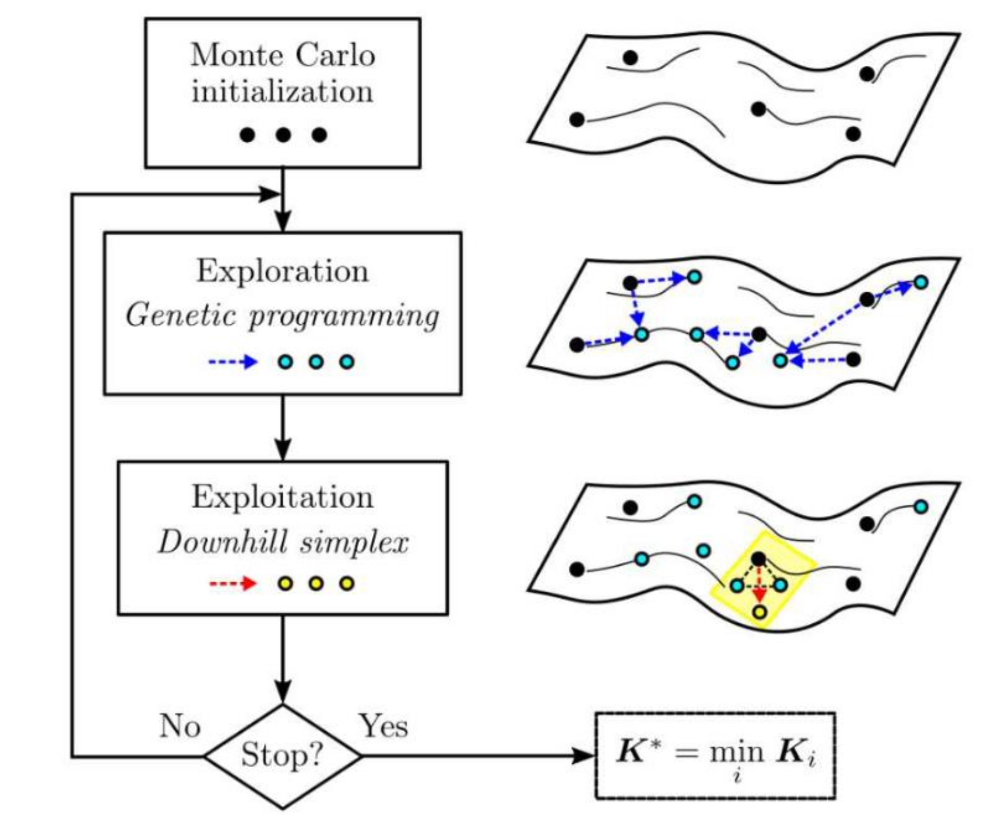
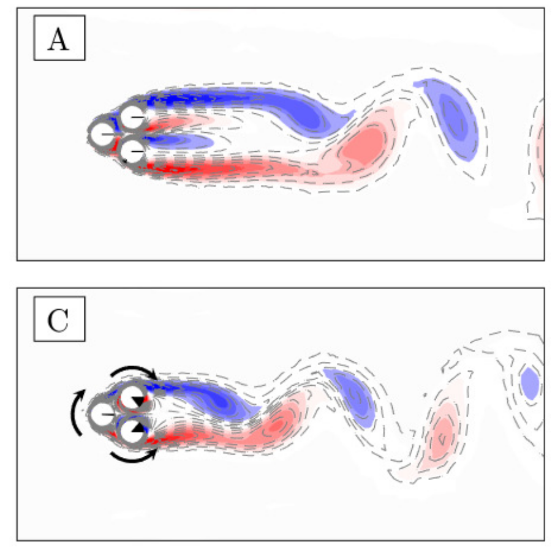
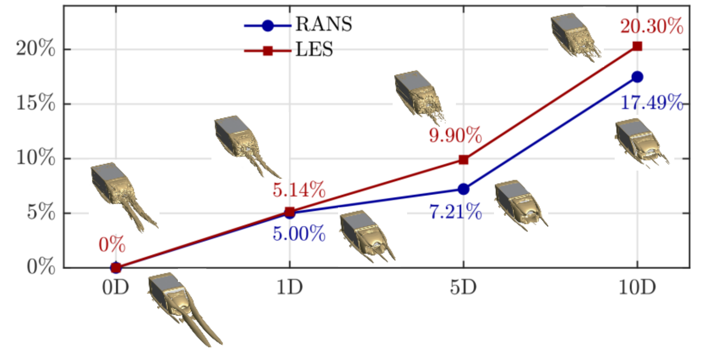

Methodology
Explorative Gradient Method (EGM)
This method is developed by Explorative gradient method (EGM) is a novel optimization approach. The iterations alternate between downhill simplex iteration as a robust gradient method and LHS/GA as the most explorative step. A distinguishing feature of EGM is that it performs an ‘aggressive’ exploitation in one step (see the solid lines) and the arguably most optimal exploration in another step (see the dash lines). Thus, both exploitation and exploration come with optimizing principles and with an a priori evaluation investment which is determined upfront.
gradient-enriched Machine Learning Control (gMLC)

This mehod is developed by
Y. Cornejo Maceda,
Yiqing Li and friends.
See
Journal of Fluid Mechanics, 917, A42
Bayesian optimization (BO)
This method is developed by
Antoine Blanchard
& Themis Sapsis,
from Stochastic Analysis and Nonlinear Dynamics (SAND) lab.
See Journal of Computational Physics 425, 109901 (2021).
Configurations
Fluidic pinball
EGM is applied to the minimization of the parasitic net drag power of the multi-input fluidic pinball problem. It yields a slightly asymmetric boat-tailing actuation with 29 % net drag power reduction comprising 52 % drag reduction penalized by 23 % actuation energy.
Ahmed body
EGM reduces the drag of an 35 ◦ slanted Ahmed body by 17% with independent steady blowing at all trailing edges at Reynolds number \(Re_H = 1.9 * 10^5\). The 10-dimensional actuation space includes 5 symmetric jet slot actuator groups with variable velocity and variable blowing angle. The resulting drag is computed with a Reynolds-Averaged Navier-Stokes (RANS) simulation and verified with Large Eddy Simulation (LES).